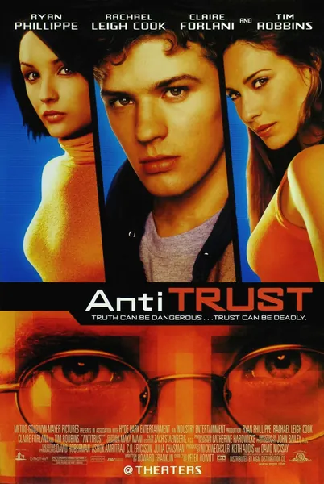

Фильм · 2001 · Драма, Триллер
Майло Хоффман, выпускник Стэнфорда, мечтающий изменить мир с помощью программирования, получает предложение от NURV — мегакорпорации, основанной легендарным Гэри Уинстоном. Неограниченные ресурсы, творческая свобода и культ личности босса — мечта любого программиста. Но всё меняется, когда Майло замечает, что коллеги начинают исчезать, а в работе обнаруживается чужой, украденный код. Это триллер о слепом поклонении основателю, корпоративном шпионаже и о том, какую цену приходится платить, когда ради бонуса при найме и опционов на акции отказываешься от собственных принципов.
Milo Hoffman, a Stanford graduate dreaming of changing the world with code, gets an offer from NURV, the mega-corp of legendary founder Gary Winston. Top resources, creative freedom, a cult of personality around the boss — a programmer's dream. Until Milo notices colleagues disappearing and someone else's code turning up stolen. A thriller about founder worship, corporate espionage and the price of dropping your principles for a signing bonus and options.